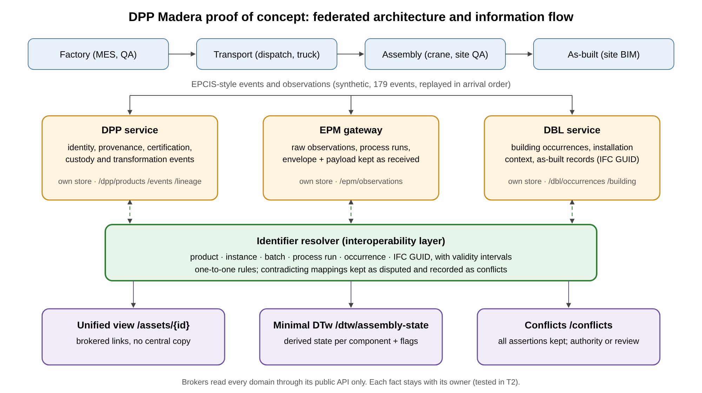
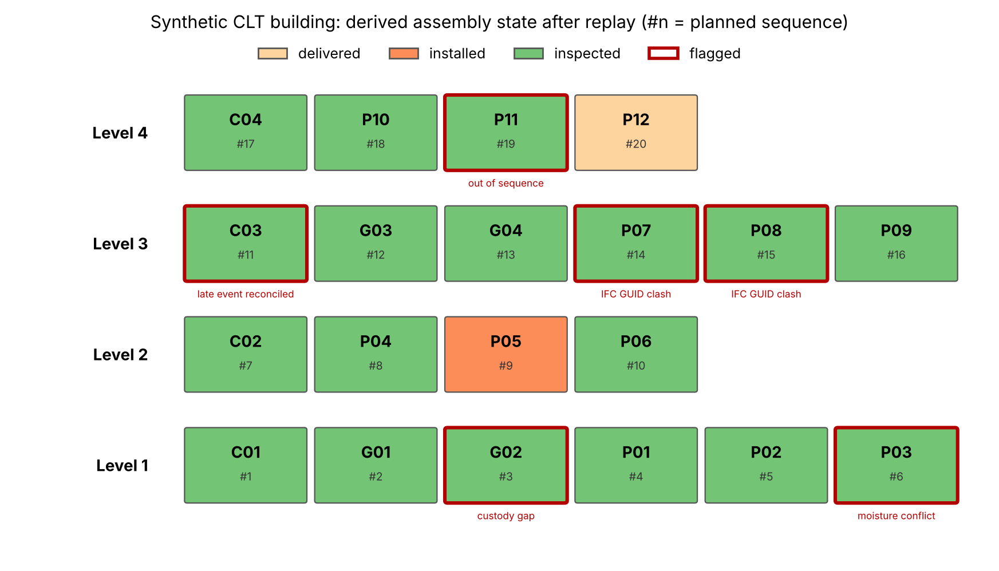

Un sistema pequeño y operativo, con un servicio por cada registro (pasaporte, observaciones en obra, libro del edificio) y un gemelo de montaje simple que lee de ellos. Le cargamos la historia completa de un edificio ficticio, incluidos cinco problemas introducidos a propósito, y verificamos que mantuviera en orden la historia de cada pieza.

| # | Qué verificamos | En palabras simples | Resultado |
|---|---|---|---|
| T1 | Resolución de identidad | Escanee cualquiera de los códigos de una pieza y llegará a todos los demás. | aprobada |
| T2 | Sin duplicación | Cada dato vive en un solo lugar; los demás solo apuntan a él. | aprobada |
| T3 | Historia completa | La historia de cada pieza va de la fábrica al edificio sin vacíos, o el vacío queda marcado. | aprobada |
| T4 | Traspaso faltante | Se detecta una pieza que llegó a obra sin registro de despacho (falla introducida). | aprobada |
| T5 | Lecturas en conflicto | Dos lecturas de humedad que no coinciden (11,8% y 18,5%) se conservan ambas, con quién y cuándo, y se envían a revisión. | aprobada |
| T6 | Registros tardíos | Una inspección registrada 48 horas tarde igual queda en el orden correcto. | aprobada |
| T7 | Conflicto en el modelo de diseño | Se detectan dos piezas que reclaman el mismo elemento del modelo de diseño. | aprobada |
| T8 | Imagen del montaje | El gemelo muestra el estado correcto de las 20 piezas y marca la que se instaló fuera de secuencia. | aprobada |
| T9 | Una vista por pieza | Una sola consulta devuelve enlaces a los cuatro registros de cualquier pieza. | aprobada |
| T10 | Cobertura de necesidades | Cada una de 14 necesidades de información tomadas de la literatura se atiende o se marca honestamente como "aún no cubierta". | aprobada |
| T11 | Repetible | Una copia limpia y un solo comando reproducen todos los resultados. | aprobada |

Cinco preguntas de ejemplo del personal de obra y de fábrica. Con los registros vinculados, cada una es una sola consulta. Las cifras de búsquedas manuales son nuestra estimación de lo que se necesita hoy para encontrar la misma respuesta en archivos separados.
| Pregunta | Respuesta | Consultas | Búsquedas manuales (estimación) |
|---|---|---|---|
| ¿Qué paneles del piso 2 están instalados pero no inspeccionados? | P05 | 1 | 9 |
| ¿Dónde está el elemento del modelo de P06, y está completa su cadena de custodia? | En el piso 2, inspeccionado, custodia completa | 1 | 4 |
| ¿Qué piezas llegaron a obra sin una cadena de custodia completa? | G02 | 1 | 40 |
| ¿Qué lecturas de humedad no coinciden, y quién las informó? | 11,8% y 18,5% en un panel, enviadas a revisión | 1 | 40 |
| ¿Qué piezas se instalaron fuera del orden planificado? | P11 | 1 | 40 |
El proyecto parte en el nivel de madurez tecnológica (TRL) 2. Esta prueba de concepto es evidencia sólida de ese nivel y el primer paso hacia TRL 3, previsto para el mes 6 con datos reales de empresas asociadas. TRL 4 está previsto para el mes 11 y TRL 5 para el final del proyecto.
El código de la PoC y el informe completo de pruebas están disponibles para evaluadores y socios, a solicitud.